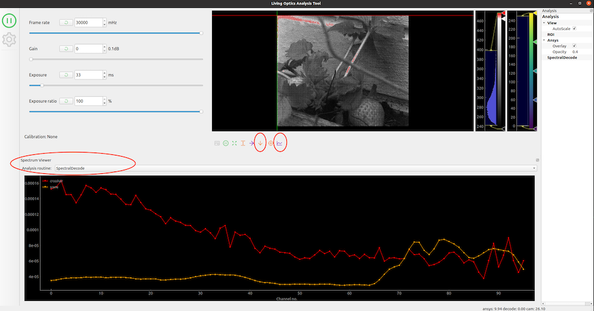
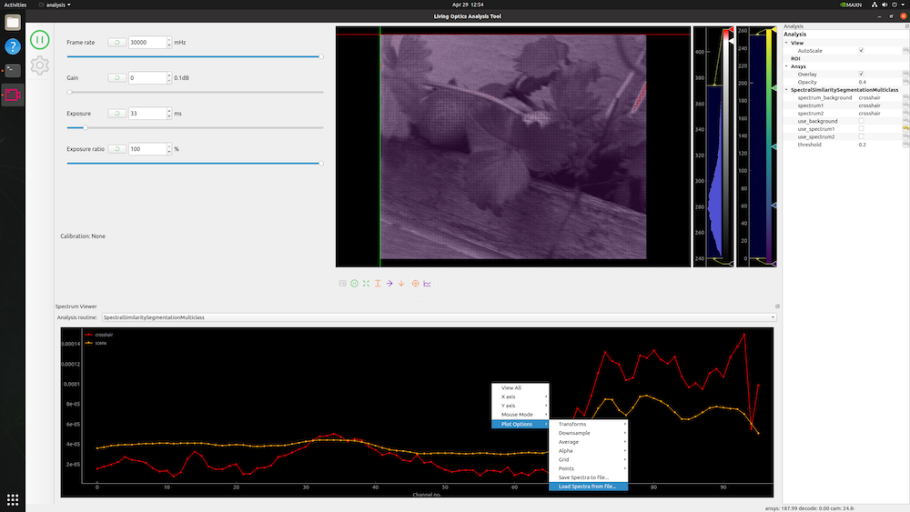
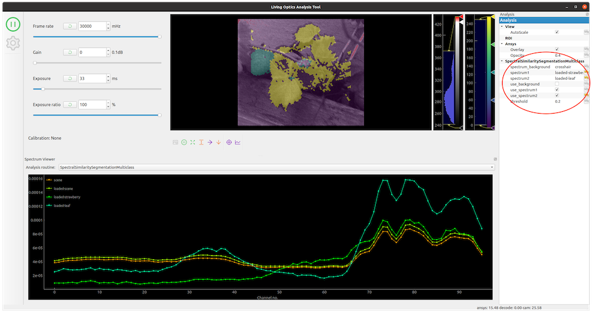

Getting started tutorial - analysis¶
This tutorial covers how to do the following using the tools:
- Opening a
.lofile - Performing segmentation of a video using spectral information about two types of object.
Pre-requisites¶
- Have downloaded and installed the SDK
- Have activated the python virtual environment
source venv/bin/activate
Download the example data file¶
- Get an example
.lodata file from the cloud portal and download to your workstation.
Open the .lo file¶
A .lo file is the processed readout of data from the Living Optics Camera. It consists of spectral lists, combined with the raw (bayered) scene frame and metadata associated with the frame.
- Run the
analysis-qttool with the filepath to the example.lofile
analysis-qt --file /path/to/file.lo
- The tool UI will appear and the file will automatically begin playing on a loop.
- Flip the view vertically using the
Flip Ybutton, to make it easier to recognize what is being viewed. - Press the
Decode Spectrabutton below theViewer. - In the
Analysis routinedropdown, select theSpectralSegmentationoption.

Analyze the scene¶
- Right-click in the 'Spectrum Viewer'
- Go to
'Plot Options' > 'Load Spectra from file...'and select thestrawberry-spectrum.jsonfile downloaded in the zip file from earlier.
This will load in previously saved spectra from this same .lo file of a strawberry and a strawberry leaf.

- In the Analysis sidebar of the tool, type in
loaded-strawberryinto thespectrum1box. - Then type in
loaded-leafinto thespectrum2box. - Finally select the
use_spectrum1anduse_spectrum2tick box for use.

You will now see that the Viewer is playing the preview stream, with a segmentation map overlaid onto it. The strawberry and strawberry leaves have been spectrally segmented using the hyperspectral information contained in the video. This technique can be applied to any object you wish to identify in a given scene.
This is the end of this tutorial. You have now gone through the basics of opening a .lo file in one of the SDK tools.
Next steps¶
Explore the SDK further with the Python examples.
To understand more of what the .lo file data format is.